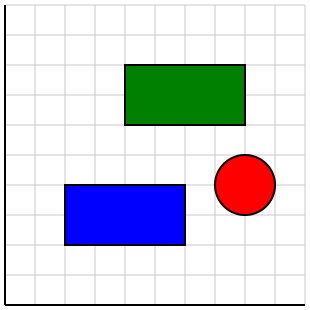
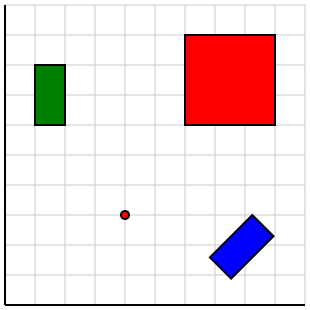
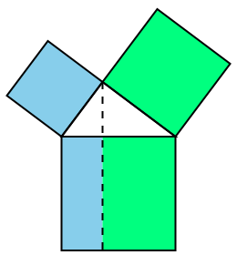
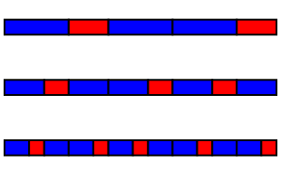
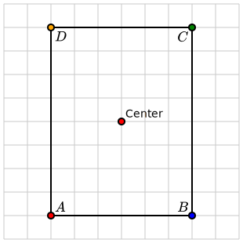
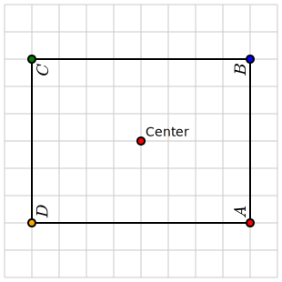
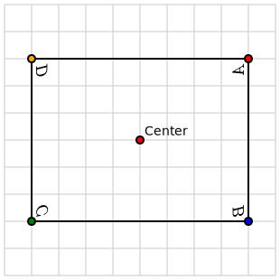
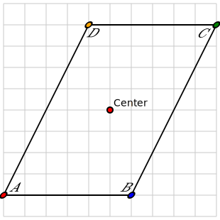

Section 5.3 Transforms
The
<coordinates> element, as described in Section 2.2, sets up a coordinate transformation that translates between the mathematical coordinates used to describe graphical components and the underlying SVG coordinate system. In some situations, it can be convenient to temporarily modify this coordinate transformation. This section outlines two ways in which this may be accomplished.
Subsection 5.3.1 The <transform> element

<transform> and a <translate> element.<diagram dimensions="(300,300)" margins="5">
<coordinates bbox="(0,0,10,10)">
<grid-axes decorations="no"/>
<rectangle lower-left="(2,2)" dimensions="(4,2)"
fill="blue" stroke="black"/>
<transform>
<translate by="(2,4)"/>
<rectangle lower-left="(2,2)" dimensions="(4,2)"
fill="green" stroke="black"/>
</transform>
<circle center="(8,4)" radius="1"
fill="red" stroke="black"/>
</coordinates>
</diagram>
In line 4, we first fill a blue rectangle whose lower-left corner is at the point \((2,2)\text{.}\) Notice that Lines 6-10 are within a
<transform> element. The following line, Line 7, uses a <translate> element to move the origin of the coordinate system to the former point \((2,4)\text{.}\) We then fill a green rectangle having the same lower-left corner \((2,2)\text{.}\) Because we have translated the coordinate system, the green rectangle has been translated by \((2,4)\text{.}\) When we are outside of the <transform> element, then the original coordinate transformation is applied. Therefore, the circle defined in Line 11 is drawn in the original coordinate system.
The following elements will produce changes in the coordinate system.
-
<translate> - This produces a translation by the value of the
@byattribute. -
<rotate> - This produces a rotation about the origin by an angle given by the
@byattribute. By default, the angle is interpreted to be in degrees, but this can be changed by setting@degrees="no". To rotate about a point other than the origin, such as \((-1,2)\text{,}\) use@about="(-1,2)". -
<scale> - This scales the axes by the value of the
@byattribute. For instance,@scale="(1,2)"produces a vertical stretch by a factor of 2.
In Figure 5.3.3, the same rectangle is drawn three times in three different coordinate systems. Notice that multiple uses of the
<transform> element are shown.

<translate>, <rotate>, and <scale>.<diagram dimensions="(300,300)" margins="5">
<coordinates bbox="(0,0,10,10)">
<grid-axes decorations="no"/>
<transform>
<translate by="(1,6)"/>
<rectangle lower-left="(0,0)" dimensions="(1,2)"
fill="green" stroke="black"/>
</transform>
<definition>p=(4,3)</definition>
<transform>
<rotate by="135" about="p"/>
<rectangle lower-left="(0,0)" dimensions="(1,2)"
fill="blue" stroke="black"/>
</transform>
<point p="p"/>
<transform>
<translate by="(6,6)"/>
<scale by="(3,1.5)"/>
<rectangle lower-left="(0,0)" dimensions="(1,2)"
fill="red" stroke="black"/>
</transform>
</coordinates>
</diagram>
The following two diagrams illustrate how the use of coordinate changes can be useful. First is a proof of the Pythagorean theorem in Figure 5.3.5.

<rotate> element.<diagram dimensions="(250,270)" margins="5">
<definition>a=3</definition>
<definition>b=4</definition>
<definition>c=sqrt(a^2+b^2)</definition>
<definition>phi=acos(a/c)</definition>
<definition>d=a*cos(phi)</definition>
<definition>p=a*(cos(phi), sin(phi))</definition>
<coordinates bbox="(-2.5,-5,7.5,6)" aspect-ratio="1">
<rectangle lower-left="(0,-c)" dimensions="(d,c)"
fill="skyblue"/>
<rectangle lower-left="(d,-c)" dimensions="(c-d,c)"
fill="springgreen"/>
<transform>
<rotate by="phi-pi/2" degrees="no"/>
<rectangle lower-left="(-a,0)" dimensions="(a,a)"
fill="skyblue" stroke="black"/>
<rectangle lower-left="(0,a)" dimensions="(b,b)"
fill="springgreen" stroke="black"/>
</transform>
<rectangle lower-left="(0,-c)" dimensions="(c,c)"
stroke="black"/>
<line endpoints="(p,(d,-c))" dash="8 8" stroke="black"/>
<triangle at="triangle" vertices="((0,0),(c,0),p)" stroke="black"/>
</coordinates>
</diagram>
It sometimes happens that we want to create many copies of the same graphical component with different coordinate transformations applied. Using transform elements inside a
<repeat> element can be a simple way to do that. Consider Figure 5.3.7, which illustrates three Fibonacci tilings, with each tiling obtained by a process called deflation, from the one above. Here are two important facts:-
Within each tiling, there are two types a tiling, a long tile and a short tile, and the ratio of their lengths is the golden ratio \(\phi\text{.}\)
-
The lengths of the tiles in one tiling are scaled by \(\phi\) compared to the tiles in the tiling below.

<diagram dimensions="(300, 200)" margins="5">
<definition>phi=(sqrt(5)+1)/2</definition>
<definition>height=0.25</definition>
<definition>width=5+8*phi</definition>
<definition>colors={0:'blue', 1:'red'}</definition>
<definition>widths={0:phi, 1:1}</definition>
<definition>tiling2=[0,1,0,0,1]</definition>
<definition>tiling1=[0,1,0,0,1,0,1,0]</definition>
<definition>tiling0=[0,1,0,0,1,0,1,0,0,1,0,0,1]</definition>
<definition>tilings=[tiling0, tiling1, tiling2]</definition>
<coordinates bbox="(0,-0.5,width,2.5)">
<transform>
<repeat parameter="tiling in tilings">
<transform>
<repeat parameter="type in tiling">
<rectangle lower-left="(0,0)"
dimensions="(widths[type], height)"
fill="${colors[type]}" stroke="black"/>
<translate by="(widths[type],0)"/>
</repeat>
</transform>
<scale by="(phi, 1)"/>
<translate by="(0,1)"/>
</repeat>
</transform>
</coordinates>
</diagram>
Subsection 5.3.2 Transforming a <group>
A second way in which the coordinate system can be modified is by adding a
@transform element to a group. While the effect is somewhat similar to the <transform> element, there is an important difference.
Roughly speaking, a mathematical diagram created by PreFigure has two general types of objects: mathematical graphical elements, which are visual representations of an idealized mathematical object such as a rectangle, and purely visual elements, such as labels. PreFigure encourages authors to think mostly in terms of the mathematical graphical elements used to express an idea and then automates the behavior of the visual elements. For instance, unless explicitly requested, labels are drawn with a horizontal baseline, even if the coordinate system has been rotated.
There may be occassions, however, when you may want the coordinate transform to be applied to all the elements in a portion of the diagram. To do this, we will collect a group of elements inside a
<group> and supply the <group> with a @transform attribute.
To illustrate, Figure 5.3.9 demonstrates several elements, including a rectangle, points, and labels, collected together in a
<group>.

<group>.<diagram dimensions="(300,300)" margins="5"
xmlns="https://prefigure.org">
<coordinates bbox="(0,0,10,10)">
<grid/>
<group>
<rectangle center="(5,5)" dimensions="(6,8)" thickness="2"
stroke="black" fill="none"/>
<point p="(2,1)" alignment="ne" fill="red"><m>A</m></point>
<point p="(8,1)" alignment="nw" fill="blue"><m>B</m></point>
<point p="(8,9)" alignment="sw" fill="green"><m>C</m></point>
<point p="(2,9)" alignment="se" fill="orange"><m>D</m></point>
</group>
<point p="(5,5)" alignment="ne">Center</point>
</coordinates>
</diagram>
We may rotate all of these elements about the center, which is the point \((5,5)\text{,}\) by giving the
<group> element an attribute @transform="rotate(90,(5,5))" as illustrated in Figure 5.3.11. Notice that the rectangle, points, and labels have all been rotated together as if they were a single object. The label on the center point is not rotated since it is not in the <group>.

<group>.<diagram dimensions="(300,300)" margins="5"
xmlns="https://prefigure.org">
<coordinates bbox="(0,0,10,10)">
<grid/>
<group transform="rotate(90,(5,5))">
<rectangle center="(5,5)" dimensions="(6,8)" thickness="2"
stroke="black" fill="none"/>
<point p="(2,1)" alignment="ne" fill="red"><m>A</m></point>
<point p="(8,1)" alignment="nw" fill="blue"><m>B</m></point>
<point p="(8,9)" alignment="sw" fill="green"><m>C</m></point>
<point p="(2,9)" alignment="se" fill="orange"><m>D</m></point>
</group>
<point p="(5,5)" alignment="ne">Center</point>
</coordinates>
</diagram>
There are three types of transformations that may be created in this way:
- Translations
- Rotations
- Use
@transform="rotate(angle,(a,b))"to rotate the elements by anangle, expressed in degrees, about the point \((a,b)\text{.}\) Using@transform="rotate(angle)"rotates about the origin \((0,0)\text{.}\) - Reflections
-
To define a reflection, we need to define a line, and there are two ways to do this. We could give two points on the line so
@transform="reflect((1,2),(3,4))"defines a reflection in the line passing through the points \((1,2)\) and \((3,4)\text{.}\)Alternatively, every line can be written in the form \(Ax+By=C\) so reflections can also be defined as@transform="reflect(A,B,C)".For instance, to reflect in the line \(x=5\text{,}\) one could use with@transform="reflect((5,0), (5,3))"or@transform="reflect(1,0,5)". Also,@transform="reflect(1,1,10)"will reflect in the line \(x+y=10\) as illustrated in Figure 5.3.13.

<group>.<diagram dimensions="(300,300)" margins="5"
xmlns="https://prefigure.org">
<coordinates bbox="(0,0,10,10)">
<grid/>
<group transform="reflect(1,1,10)">
<rectangle center="(5,5)" dimensions="(6,8)" thickness="2"
stroke="black" fill="none"/>
<point p="(2,1)" alignment="ne" fill="red"><m>A</m></point>
<point p="(8,1)" alignment="nw" fill="blue"><m>B</m></point>
<point p="(8,9)" alignment="sw" fill="green"><m>C</m></point>
<point p="(2,9)" alignment="se" fill="orange"><m>D</m></point>
</group>
<point p="(5,5)" alignment="ne">Center</point>
</coordinates>
</diagram>
- Scaling
- We can scale about a point
centerusing@transform="scale(sx, sy, center)"or@transform="scale(x, center)". - Matrix
- More generally, we can apply a \(2\times2\) matrix about a
center>. For instance, a horizontal shear can be realized as@transform="matrix([[1,0.5],[0,1]], center)", as illustrated in Figure 5.3.15.

matrix to a <group>.<diagram dimensions="(300,300)" margins="5"
xmlns="https://prefigure.org">
<coordinates bbox="(0,0,10,10)">
<grid/>
<group transform="matrix([[1,0.5],[0,1]], (5,5))">
<rectangle center="(5,5)" dimensions="(6,8)" thickness="2"
stroke="black" fill="none"/>
<point p="(2,1)" alignment="ne" fill="red"><m>A</m></point>
<point p="(8,1)" alignment="nw" fill="blue"><m>B</m></point>
<point p="(8,9)" alignment="sw" fill="green"><m>C</m></point>
<point p="(2,9)" alignment="se" fill="orange"><m>D</m></point>
</group>
<point p="(5,5)" alignment="ne">Center</point>
</coordinates>
</diagram>
These effects do not work in the same way for tactile diagrams since labels will always need to be placed at the appropriate size and orientation.